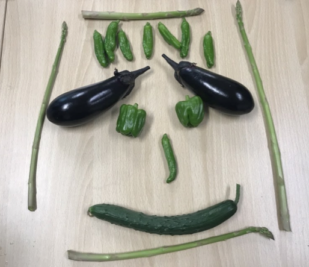

様々な形・色がある園芸作物が好き。
2019.09.14 櫻田
Agrlienに入って学生生活に楽しみが増えた修士課程2年の櫻田です。
今年度になって、
学生でいられるのもあと1年か～。何かやり残したことはないかなぁ。
なんて考え始め、ある日ふと、研究室の前の掲示板を見ていたらAgrlien勧誘のチラシが。
これだ！農業サークル！
学生の間に農作業を経験したいと思っていたので、すごくいいものを見つけてしまったと思いました。掲示板を見た過去の自分を褒めたい。(笑)
Agrlienの仲間入りをしたのは5月のことで、それからというもの、想像以上にとても良い経験ができていて、もっと早くこのサークルの存在を知っておきたかったと思えるほどAgrlienでの活動を楽しんでいます。
今後も植物とふれあい、農業を学びながら、残り少ない学生生活を楽しみたいと思います！
さて、そろそろタイトルに書いた通り、園芸作物についてのお話を。
私は今、花の研究をしているのですが、今回のブログでは、私が園芸作物の研究に興味を持ったきっかけについて書きたいと思います。
園芸作物には、野菜、果樹、花きが分類されるのですが、皆さんがご存知のように、植物の種類によって様々な形や大きさがあって、色もカラフルで面白いですよね。
そのような様々な特徴を持つ園芸作物を新しく作り出すために、いくつかの育種方法が考えられてきました。
そのうちの一つに『細胞融合』という方法があります。私はこの方法で作られた野菜や果物にとても惹かれて、植物の研究って面白い！と思ったのです。
細胞融合では、交配ができない種（しゅ）同士でも雑種を作ることができ、例えば
キャベツ×小松菜・・・千宝菜（センポウ菜）
メロン×カボチャ・・・メロチャ
オレンジ×カラタチ・・・オレタチ
などなど、細胞融合の成功例はいくつもあるようです。名前も面白い。
興味を持った方はぜひ調べてみて下さい！
（参照：https://ichiranya.com/technology/039-hybrid_vegetable.php）
ただ、こういった野菜・果物は、スーパーなどで見ることができないのが残念なところ。
ですが、細胞融合でなくても新品種の育成はたくさん行われています。
今までにない特徴を持った園芸作物がどんどん市場に出ているので、この品種はどんな特徴があるんだろう、どうやって作られたんだろう、と気にして買い物をするのも楽しいかもしれませんね。
園芸作物が持つ面白い特徴を知ることで、農業に興味を持つ人が増えてくれたらいいな～と思う今日この頃です。

それでは。
櫻田